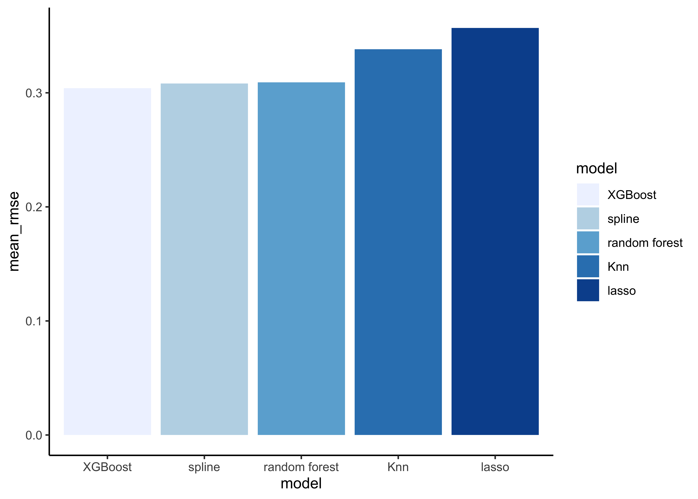
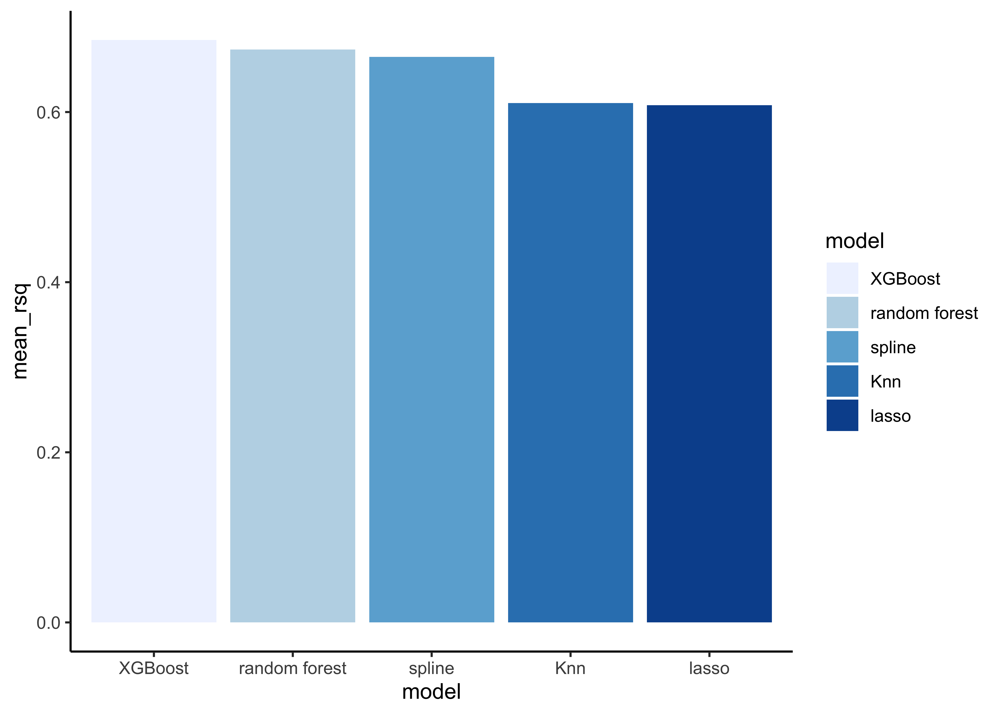

6 Model building
6.1 Specify models
The process of specifying our models is always as follows:
- Pick a
model type - set the
engine - Set the
mode: regression or classification
You can choose the model type and engine from this list.
6.1.1 Lasso regression
lasso_spec <- # your model specification
linear_reg(penalty = 0.1, mixture = 1) %>% # model type and some options
set_engine(engine = "glmnet") %>% # model engine
set_mode("regression") # model mode
# Show your model specification
lasso_spec
#> Linear Regression Model Specification (regression)
#>
#> Main Arguments:
#> penalty = 0.1
#> mixture = 1
#>
#> Computational engine: glmnetpenalty: The total amount of regularization in the model. Higher values imply a higher penalty. If you choose a penalty of 0 you fit a standard linear regression model.mixture: The mixture amounts of different types of regularization. A number between zero and one (inclusive) that is the proportion of L1 regularization (i.e. lasso) in the model. When mixture = 1, it is a pure lasso model while mixture = 0 indicates that ridge regression is being used (this works only for engines “glmnet” and “spark”).
Note that for the lasso regression to work properly it is very important to always add a data normalization step.
6.1.2 Natural spline
spline_spec <-
linear_reg() %>%
set_engine(engine = "lm") %>%
set_mode("regression")To use this model correctly, we also need to add a data normalization step as well as a step to declare the degree of freedom in our model. We will include the degrees of freedom at a later step (when we create the workflows).
6.2 Create workflows
To combine the data preparation recipe with the model building, we use the package workflows. A workflow is an object that can bundle together your pre-processing recipe, modeling, and even post-processing requests (like calculating the RMSE).
6.2.1 Lasso
Bundle recipe and model with workflows:
lasso_wflow <- # new workflow object
workflow() %>% # use workflow function
add_recipe(housing_rec) %>% # use the new recipe
add_model(lasso_spec) # add your model spec6.2.2 Natural spline
We need to declare the degrees of freedom -with step_ns()- for our natural spline. In our example, we just add the new step to our housing_rec recipe and create a new recipe which we will only use for ourse natural spline.
library(splines)
housing_rec_spline <-
housing_rec %>%
step_ns(all_predictors(), deg_free = 3) # natural splineThe higher the degree of freedom, the more complex the resulting model.
Now we bundle the recipe and our model:
spline_wflow <-
workflow() %>%
add_recipe(housing_rec_spline) %>% # use the spline recipe
add_model(spline_spec) 6.2.3 Random forest
Bundle recipe and model:
rf_wflow <-
workflow() %>%
add_recipe(housing_rec) %>%
add_model(rf_spec) 6.3 Evaluate models
Now we can use our validation set (cv_folds) to estimate the performance of our models using the fit_resamples() function to fit the models on each of the folds and store the results.
Note that fit_resamples() will fit our model to each resample and evaluate on the heldout set from each resample. The function is usually only used for computing performance metrics across some set of resamples to evaluate our models (like RMSE) - the models are not even stored. However, in our example we save the predictions in order to visualize the model fit and residuals with control_resamples(save_pred = TRUE).
Finally, we collect the performance metrics with collect_metrics() and pick the model that does best on the validation set.
6.3.1 Lasso regression
set.seed(100)
lasso_res <-
lasso_wflow %>% # use workflow object
fit_resamples(resamples = cv_folds,
control = control_resamples(save_pred = TRUE) # save predictions
)Show average performance over all folds:
lasso_res %>% collect_metrics(summarize = TRUE)
#> # A tibble: 2 x 6
#> .metric .estimator mean n std_err .config
#> <chr> <chr> <dbl> <int> <dbl> <chr>
#> 1 rmse standard 0.357 5 0.00119 Preprocessor1_Model1
#> 2 rsq standard 0.608 5 0.00356 Preprocessor1_Model1Show performance for every single fold:
lasso_res %>% collect_metrics(summarize = FALSE)
#> # A tibble: 10 x 5
#> id .metric .estimator .estimate .config
#> <chr> <chr> <chr> <dbl> <chr>
#> 1 Fold1 rmse standard 0.356 Preprocessor1_Model1
#> 2 Fold1 rsq standard 0.599 Preprocessor1_Model1
#> 3 Fold2 rmse standard 0.354 Preprocessor1_Model1
#> 4 Fold2 rsq standard 0.613 Preprocessor1_Model1
#> 5 Fold3 rmse standard 0.361 Preprocessor1_Model1
#> 6 Fold3 rsq standard 0.608 Preprocessor1_Model1
#> # … with 4 more rowsTo assess the model predictions, we plot the predictions on the y-axis and the real median house value at the x-axis. Note that the red line is not our model. If our model would have made no mistakes at all, all points would lie on the red diagonal line (where the prediction equals the real value).
assess_res <- collect_predictions(lasso_res)
assess_res %>%
ggplot(aes(x = median_house_value, y = .pred)) +
geom_point(alpha = .15) +
geom_abline(col = "red") +
coord_obs_pred() +
ylab("Predicted")Let`s look at the 10 districts where our model produced the greatest residuals:
wrongest_prediction <-
assess_res %>%
mutate(residual = median_house_value - .pred) %>%
arrange(desc(abs(residual))) %>%
slice_head(n = 10)
wrongest_prediction
#> # A tibble: 10 x 6
#> id .pred .row median_house_value .config residual
#> <chr> <dbl> <int> <dbl> <chr> <dbl>
#> 1 Fold1 11.9 6523 9.62 Preprocessor1_Model1 -2.30
#> 2 Fold3 12.0 4197 9.77 Preprocessor1_Model1 -2.21
#> 3 Fold3 12.0 1348 10.0 Preprocessor1_Model1 -2.01
#> 4 Fold5 11.6 2084 9.62 Preprocessor1_Model1 -1.98
#> 5 Fold5 11.5 1868 9.62 Preprocessor1_Model1 -1.87
#> 6 Fold1 12.0 12383 10.3 Preprocessor1_Model1 -1.79
#> # … with 4 more rowsShow the observations in the training data.
train_data %>%
dplyr::slice(wrongest_prediction$.row)
#> # A tibble: 10 x 8
#> longitude latitude median_house_va… median_income ocean_proximity
#> <dbl> <dbl> <dbl> <dbl> <fct>
#> 1 -118. 34.2 14999 4.19 INLAND
#> 2 -118. 34.2 17500 2.37 <1H OCEAN
#> 3 -122. 37.9 22500 2.68 NEAR BAY
#> 4 -117. 36.4 14999 2.1 INLAND
#> 5 -123. 39.7 14999 1.66 INLAND
#> 6 -121. 34.7 28300 2.74 NEAR OCEAN
#> # … with 4 more rows, and 3 more variables: bedrooms_per_room <dbl>,
#> # rooms_per_household <dbl>, population_per_household <dbl>In this tutorial, we don’t further investigate the reasons for the wrong predictions. In reality, we would check wether some of the districts are outliers in comparision to the rest of our data and we would need to decide if we should drop some of the cases from the data (if there are good reasons to do so).
6.3.2 Natural spline
We don’t repeat all of the steps shown in lasso regression and just focus on the performance metrics.
spline_res <-
spline_wflow %>%
fit_resamples(
resamples = cv_folds,
control = control_resamples(save_pred = TRUE)
)
spline_res %>% collect_metrics(summarize = TRUE)
#> # A tibble: 2 x 6
#> .metric .estimator mean n std_err .config
#> <chr> <chr> <dbl> <int> <dbl> <chr>
#> 1 rmse standard 0.308 4 0.00101 Preprocessor1_Model1
#> 2 rsq standard 0.665 4 0.00199 Preprocessor1_Model16.3.3 Random forest
We don’t repeat all of the steps shown in lasso regression and just focus on the performance metrics.
rf_res <-
rf_wflow %>%
fit_resamples(
resamples = cv_folds,
control = control_resamples(save_pred = TRUE)
)
rf_res %>% collect_metrics(summarize = TRUE)
#> # A tibble: 2 x 6
#> .metric .estimator mean n std_err .config
#> <chr> <chr> <dbl> <int> <dbl> <chr>
#> 1 rmse standard 0.309 5 0.00135 Preprocessor1_Model1
#> 2 rsq standard 0.673 5 0.00144 Preprocessor1_Model16.3.4 XGBoost
We don’t repeat all of the steps shown in lasso regression and just focus on the performance metrics.
xgb_res <-
xgb_wflow %>%
fit_resamples(
resamples = cv_folds,
control = control_resamples(save_pred = TRUE)
)
xgb_res %>% collect_metrics(summarize = TRUE)
#> # A tibble: 2 x 6
#> .metric .estimator mean n std_err .config
#> <chr> <chr> <dbl> <int> <dbl> <chr>
#> 1 rmse standard 0.304 5 0.00158 Preprocessor1_Model1
#> 2 rsq standard 0.685 5 0.00102 Preprocessor1_Model16.3.5 K-nearest neighbor
We don’t repeat all of the steps shown in lasso regression and just focus on the performance metrics.
knn_res <-
knn_wflow %>%
fit_resamples(
resamples = cv_folds,
control = control_resamples(save_pred = TRUE)
)
knn_res %>% collect_metrics(summarize = TRUE)
#> # A tibble: 2 x 6
#> .metric .estimator mean n std_err .config
#> <chr> <chr> <dbl> <int> <dbl> <chr>
#> 1 rmse standard 0.338 5 0.00136 Preprocessor1_Model1
#> 2 rsq standard 0.611 5 0.00184 Preprocessor1_Model16.3.6 Compare models
Extract the RMSE from our models to compare them:
lasso_rmse <-
lasso_res %>%
collect_metrics(summarise = TRUE) %>%
mutate(model = "lasso")
spline_rmse <-
spline_res %>%
collect_metrics(summarise = TRUE) %>%
mutate(model = "spline")
rf_rmse <-
rf_res %>%
collect_metrics(summarise = TRUE) %>%
mutate(model = "random forest")
xgb_rmse <-
xgb_res %>%
collect_metrics(summarise = TRUE) %>%
mutate(model = "XGBoost")
knn_rmse <-
knn_res %>%
collect_metrics(summarise = TRUE) %>%
mutate(model = "Knn")
# create dataframe with all models
model_compare <- bind_rows(lasso_rmse,
spline_rmse,
rf_rmse,
xgb_rmse,
knn_rmse)
# change data structure
model_comp <-
model_compare %>%
select(model, .metric, mean, std_err) %>%
pivot_wider(names_from = .metric, values_from = c(mean, std_err))
# show rmse
model_comp %>%
arrange(mean_rmse) %>%
mutate(model = fct_reorder(model, mean_rmse)) %>%
ggplot(aes(model, mean_rmse, fill=model)) +
geom_col() +
scale_fill_brewer(palette = "Blues")
# show rsq
model_comp %>%
arrange(mean_rsq) %>%
mutate(model = fct_reorder(model, desc(mean_rsq))) %>%
ggplot(aes(model, mean_rsq, fill=model)) +
geom_col() +
scale_fill_brewer(palette = "Blues")

Note that the model results are quite similar.
# find minimum rmse
model_comp %>%
slice_min(mean_rmse)
#> # A tibble: 1 x 5
#> model mean_rmse mean_rsq std_err_rmse std_err_rsq
#> <chr> <dbl> <dbl> <dbl> <dbl>
#> 1 XGBoost 0.304 0.685 0.00158 0.00102Now it’s time to fit the best model (in our case the XGBoost model) one last time to the full training set and evaluate the resulting final model on the test set.
6.4 Last fit and evaluation on test set
Tidymodels provides the function last_fit() which fits a model to the training data and evaluates it on the test set. We just need to provide the workflow object of the best model as well as the data split object (not the training data).
last_fit_xgb <- last_fit(xgb_wflow, split = data_split)
# Show RMSE and RSQ
last_fit_xgb %>%
collect_metrics()
#> # A tibble: 2 x 4
#> .metric .estimator .estimate .config
#> <chr> <chr> <dbl> <chr>
#> 1 rmse standard 0.305 Preprocessor1_Model1
#> 2 rsq standard 0.682 Preprocessor1_Model1And this is our final result. Remember that if a model fit to the training dataset also fits the test dataset well, minimal overfitting has taken place. This seems to be also the case in our example.